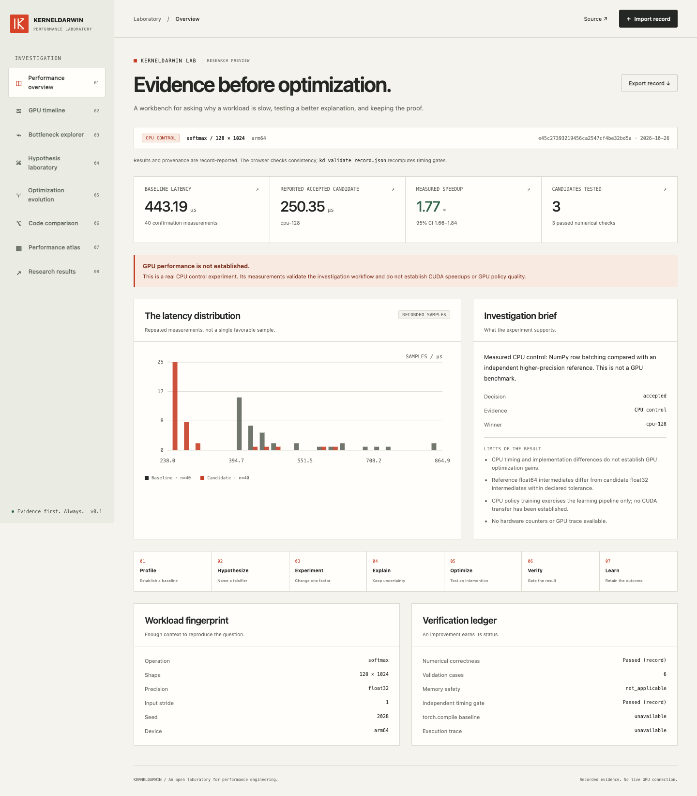
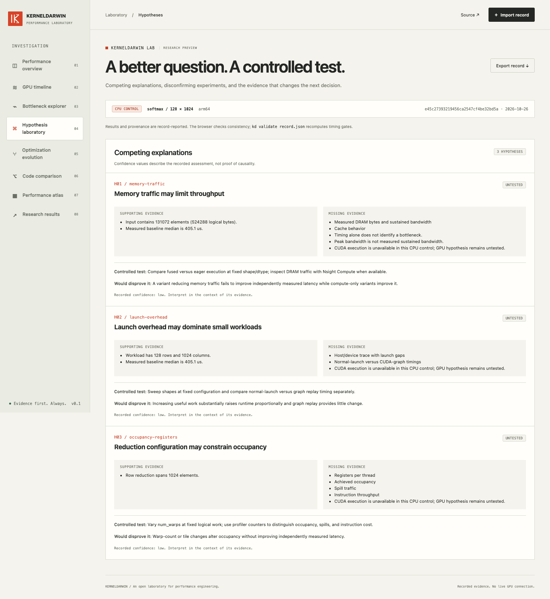
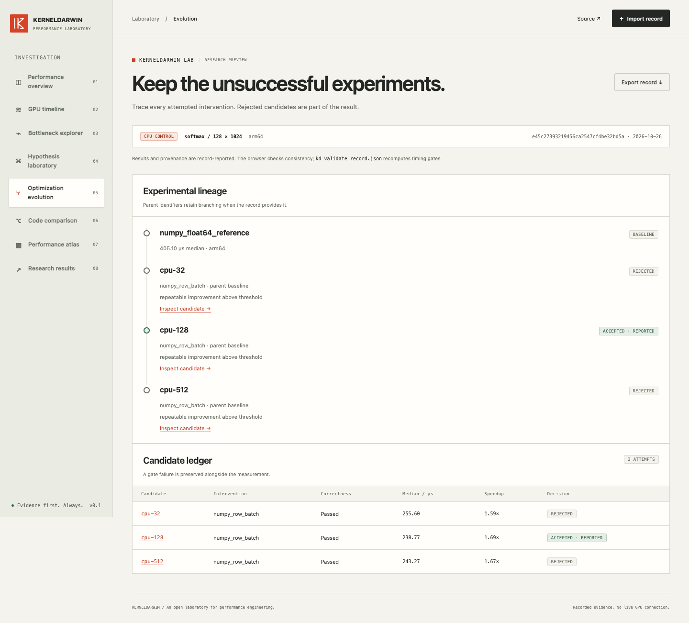

KERNELDARWIN LAB
KERNELDARWIN LABWhy is this workload slow?
Evidence before optimization.
01 / INSPECT
Evidence before optimization.
The latency distribution. The verification ledger.

Actual LAB screenshot / CPU control
02 / QUESTION
A better question. A controlled test.
Supporting evidence. Missing evidence. A falsifier.

Unconfirmed explanations stay visible
03 / KEEP THE RECORD
Keep the unsuccessful experiments.
Rejected candidates are part of the result.

Recorded interventions and their outcomes
KERNELDARWIN
Research preview.
github.com/nazeeh111/KERNELDARWIN
CUDA validation pending.
CPU CONTROL / RECORDED PLAYBACKKERNELDARWIN · RESEARCH PREVIEW
Recorded evidence. No live GPU connection.PERFORMANCE LABORATORY / v0.1